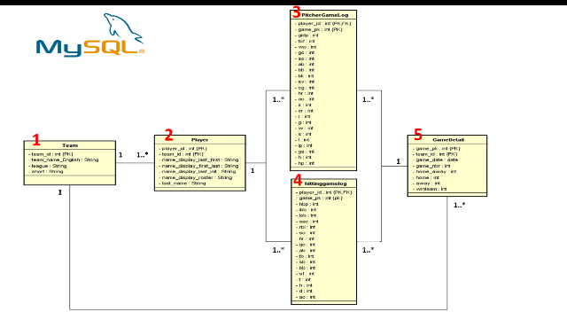

JinYuan, Guo
能力概述：
．現任職國立大學 大數據中心專任研究助理
．資策會大數據資料分析師養成班結訓
在半年資策會訓練中，學習資料探勘、數據分析、程式設計，
並於最後專題發表將所學做完整統合。
．中興大學應用經濟碩士，具備經濟、金融專業與統計能力。
．外貿協會國際貿易特訓班37期合格結訓，從扎實的經貿課程中，學習國貿實務與完整的商務英語訓練，並能進行市場調查及撰寫企劃文案。
- 技能專長
Skills -
程式能力
Python、R、MySQL、JavaScript
工作技能
資料探勘、數據分析、程式設計、大數據分析
語文能力
英文TOEIC聽讀745分 口說140分
證照資格
資策會巨量資料分析師養成班結訓
外貿協會國貿特訓班結訓
GEFT全民財經檢定合格 - 經歷簡介
Experience -
國立大學 大數據中心專任研究助理2017.8 - 仍在職
- 提供數據分析建議，協助大數據中心主任進行決策，推動國科會旗艦計畫專案、業界產學合作案，並成為各單位溝通之橋樑；協助研究計畫的進行，並處理相關行政工作。
資策會Big Data資料分析師養成班2016.10 - 2017.4
- 半年的訓練課程中，學習用R分析資料，使用Python網頁爬取ETL，關聯式資料庫MySQL和NoSQL如MongoDB的管理與維護，和可以減少企業維護成本的Amazon雲端運算服務AWS維運，及Docker管理，還有在大數據中重要的Hadoop ecosystem叢集管理(Spark,Hive,HBase,Pig...等)，並透過所學技能製作專題
我們小組的專題是「MLB賽事預測分析」，利用Python網路爬蟲抓取資料，將資料整理後利用R語言進行各項模型分析。
外貿協會國際貿易特訓班37期2016.1 - 2016.6
- 退伍後順利考試通過錄取ITI國貿班37期，半年的培訓中學習商務英語與經貿課程，包含了國際貿易實務、國際行銷、進出口實務、商務法律及其他企業人才應備知能，希望能透過ITI所學與本身經濟主修專長發揮長才
和林專業髮型2014.11 - 2015.11
- 副店長，負責遷店裝潢整修整體規劃、營業資材管理與會計出納
秀水國小總務處教育服務役2013.11 - 2014.9
- 研究所畢業後以碩士學歷申請教育替代役，在秀水國小服務11個月，服役期間認真盡責，協助行政庶務工作。且獲得校長、總務、學務主任、庶務組長對我工作表現及態度，皆有高度讚許，並於退伍時獲得優秀表現的獎狀表揚。
- 學歷
Education -
國立中興大學應用經濟研究所碩士2011.9 - 2013.6
- 碩士論文研究主題是預測乾旱對作物減產數量影響，運用Stata統計軟體進行大量數據處理運算，從NOAA開放之200年歷史資料共約2500萬筆氣候資料中篩選，進行全球37個國家的綜橫面資料迴歸分析。
國立中興大學應用經濟系學士2007.9 - 2011.6
- 資策會專題發表
-

- 資策會專題發表
MLB賽事預測分析 - 
- 個人作品
Personal Works -
JinYuan部份個人作品／參與之專題皆放置於 GitHub 網站上，
https://github.com/YuanData
敬請參考